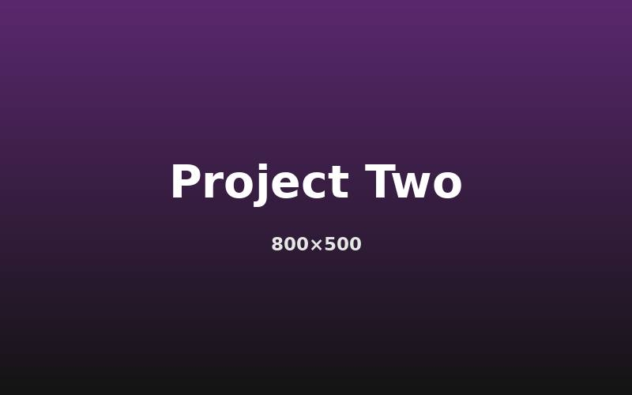

Performance patterns
Open DevTools > Network, throttle to Slow 4G, and reload. Watch which images load immediately and which wait until you scroll.
LCP: measuring…
Scroll down ↓
Below the fold: lazy-loaded



Open DevTools > Network, throttle to Slow 4G, and reload. Watch which images load immediately and which wait until you scroll.
LCP: measuring…
Scroll down ↓
